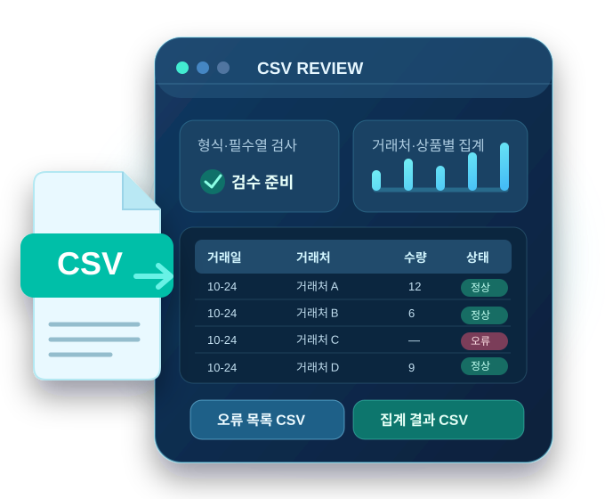

원본 데이터 행 ↗
0
헤더 제외 · 전체 파일
엑셀 표를 복사해 붙여넣거나 CSV 파일을 선택하세요. 정상 거래와 오류 행을 분리하고 거래처·상품별 매출을 자동 집계합니다. 파일 내용은 서버로 전송하지 않습니다.
직접 정리하기 어렵다면? CSV 1개·500행 이하 오류 검수를 담당자에게 맡길 수 있습니다. 국내 BASIC 29,000원 의뢰 상담 → (결제·주문 확정 아님)

CSV라는 말을 몰라도 괜찮습니다. 예제로 먼저 연습하고, 내 거래내역 파일을 선택하면 됩니다.
아래 예제로 결과 보기를 누르면 실제 거래가 아닌 가상 데이터로 오류와 집계 화면을 볼 수 있습니다. 회원가입도 필요 없습니다.
엑셀 거래 표를 제목 줄부터 복사하여 엑셀 복사·붙여넣기에 넣으면 바로 검사할 수 있습니다. 또는 7개 필수 열이 있는 CSV 파일을 선택하세요.
필요한 항목 7개 확인 →앱이 날짜·빈칸·수량·단가 등을 확인합니다. 문제가 있는 거래는 집계에서 빼고, 이유를 따로 보여줍니다.
정상 거래는 사용할 수 있는 행, 확인 필요는 고쳐야 할 행, 집계는 정상 거래만 더한 결과입니다. 필요하면 세 파일을 각각 저장합니다.
결과 화면 읽는 법 →안심하세요: CSV 파일은 기기 안에서만 읽고 분석하며, 이 앱의 서버로 업로드하지 않습니다. 아래의 예제는 가상 데이터입니다.
필수 7개 열이 있는 거래 CSV 최대 5개 · 총 10,000행
UTF-8 · CP949 CSV 지원
선택한 파일이 없습니다.
엑셀에서 거래일·거래처코드·거래처·상품코드·상품명·수량·단가가 있는 표를 제목 행까지 선택하고 복사(Ctrl+C)한 다음 아래에 붙여넣으세요.
복사한 표는 이 기기에서만 검사하며 서버로 전송하지 않습니다. 검사 후 입력창은 비워집니다.
첫 번째 행에 아래 7개 열이 있어야 합니다.
날짜는 YYYY-MM-DD(예: 2026-10-24), 수량은 1 이상의 정수(1, 2, 3…), 단가는 0 이상의 정수 원 단위(0, 10000 등)로 입력하세요. 수량에 음수·소수를 넣거나 거래일에 없는 날짜를 적으면 해당 행은 집계에서 제외합니다.
아래는 가상의 1건입니다. 실제 파일도 첫 줄에 같은 항목 이름이 있어야 합니다. 열 순서는 달라도 되지만 한글 이름은 정확하게 써야 합니다.
| 거래일 | 거래처코드 | 거래처 | 상품코드 | 상품명 | 수량 | 단가 |
|---|---|---|---|---|---|---|
| 2026-10-24 | 001 | 가상상사 | 0007 | 샘플상품 | 2 | 10000 |
한 번에 최대 5개 파일·총 10,000행이며 파일당 10MB, 전체 20MB를 넘길 수 없습니다. 같은 내용의 파일을 두 번 넣으면 중복 파일로 제외합니다. 서로 다른 파일 안에서 동일한 거래가 반복되는 경우는 자동 중복 제거하지 않으므로 직접 확인하세요.
어려운 용어 대신 실제로 누르는 버튼과 해결 순서를 설명했습니다.
먼저 CSV 파일 선택을 눌러 파일을 하나 이상 불러오세요. 화면 아래에 파일명이 표시되어야 검수 버튼이 활성화됩니다. 예제로 연습하려면 파일 없이 가상 데이터로 체험하기를 누르세요.
파일을 열어 가장 첫 줄에 거래일, 거래처코드, 거래처, 상품코드, 상품명, 수량, 단가 7개 열 제목이 정확하게 있는지 확인하세요. 띄어쓰기나 이름이 다르면 인식하지 못합니다. 제공된 가상 CSV 샘플의 첫 줄을 복사해 시작하는 것이 가장 쉽습니다.
아직은 CSV(.csv)만 가능합니다. 엑셀에서 파일을 열고 다른 이름으로 저장 → CSV UTF-8을 선택한 후, 생성된 CSV 파일을 불러오세요.
날짜는 2026-10-24처럼 연-월-일로 적고 실제 존재하는 날짜를 사용하세요. 수량은 1, 2, 3처럼 1 이상의 정수, 단가는 10000처럼 0 이상의 정수로 적으세요. 수량·단가 빈칸과 음수 수량은 오류로 분리됩니다. 원본 CSV를 수정해 다시 실행해야 하며, 앱이 원본 내용을 자동 수정하지는 않습니다.
정상 거래에 포함된 행만 합산하기 때문입니다. 오류 목록에 표시되는 원본 파일명과 행 번호를 보고 고친 다음 다시 검수하세요. 일부 파일 전체가 제외될 수도 있습니다. 취소·반품 거래나 세금 규칙은 별도로 검토해야 합니다.
파일 인코딩 → 자동 감지로 먼저 시도하세요. 문제가 남으면 파일을 엑셀에서 CSV UTF-8로 다시 저장하거나, 앱의 CP949 선택 후 재실행하세요.
결과 아래의 정상 거래 CSV / 집계 CSV / 오류 목록 CSV를 각각 누르세요. 일반 브라우저에서는 다운로드 폴더에 저장되는 경우가 많고, 휴대전화 앱에서는 기기 파일 저장 화면이 열릴 수 있습니다. 저장이 실패하면 알림 내용을 확인하세요.
이 무료 앱은 선택한 거래 파일을 사용 중인 기기에서 처리하고 별도 분석 서버로 전송하지 않습니다. 단, 유료 서비스 링크를 누르면 외부 판매 페이지로 이동하므로 거래 데이터 전달 여부와 서비스 조건은 해당 페이지에서 별도로 확인해야 합니다.
무료 앱은 기기 내 자동 검수 도구입니다. 아래는 담당자가 별도로 처리해 결과물을 납품하는 유료 서비스이며, 앱 사용에 구매가 필요하지 않습니다.
구매 전에 각 상품 페이지의 지원 형식, 작업 범위, 납품 조건을 확인하세요. 이 앱은 파일을 판매 페이지로 자동 전송하지 않습니다.